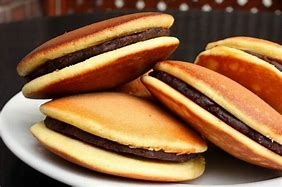

Roti Dorayaki
Dibuat pada
Resep Untuk Membuat Roti Dorayaki
Alat dan Bahan :
| Alat | Bahan |
|---|---|
|
|
Cara Membuat Roti Dorayaki :
- Kocok telur, gula, madu dengan alat pengocok atau whisk, sampai agak mengembang dan kental.
- Masukkan tepung, susu bubuk, dan soda kue. Aduk dengan whisk.
- Tambahkan susu cair kemudian aduk kembali dengan whisk. Diamkan selama kurang lebih 15 menit di dalam lemari pendingin.
- Keluarkan dari lemari pendingin, kemudian aduk kembali sebentar. Tuang dengan sendok sayur ke wajan anti lengket yang sudah dipanaskan. Bila sudah berpori dan piggiran mulai mengering, balik. Biarkan sejenak, angkat. Lakukan hal yang sama hingga adonan habis.
- Isi sisi dalam dorayaki dengan isian saus coklat atau selai sesuai selera, tumpuk dengan dorayaki lainnya. Tekan pinggirnya supaya menangkup.
- Dorayaki isi coklat siap disajikan.